1.2 Factory 51: ระบบสารสนเทศ อุปกรณ์เคลื่อนย้าย และการขนส่ง
1. หลักการจัดการโลจิสติกส์และซัพพลายเชน · ภาคปฏิบัติ
วัตถุประสงค์การเรียนรู้
- เปิดโมเดลตัวอย่าง Factory 51 ใน Plant Simulation 2504 และควบคุมมุมมอง 3D ได้
- ชี้ได้ว่าอุปกรณ์เคลื่อนย้ายแต่ละแบบในโรงงาน (รถบรรทุก เครน รถยก AGV สายพาน AS/RS) ทำหน้าที่อะไรในการรับ–เก็บ–ส่งของ
- อ่านข้อมูลแบบระบบสารสนเทศ (WMS ของคลัง HBW) และเชื่อมการขนส่งกับกิจกรรมคลังจากผลการรันได้
บทนี้ยังไม่ต้องสร้างอะไรเอง — เปิดโรงงานตัวอย่าง Factory 51 ที่มากับโปรแกรม แล้วเดินชมทั้งระบบตั้งแต่รถบรรทุกส่งของเข้า เก็บ ผลิต จนถึงคลังอัตโนมัติและรถส่งของออก เพื่อเห็นของจริงของเรื่องที่เรียนในบท 1.1: อุปกรณ์เคลื่อนย้าย ระบบสารสนเทศ (WMS) และการขนส่งกับกิจกรรมคลัง
Factory51.spp มากับโปรแกรมอยู่แล้วในโฟลเดอร์ Examples\3D ของโฟลเดอร์ติดตั้ง ไม่ต้องดาวน์โหลดเพิ่มภาพรวม
| ขั้น | ทำอะไร | เชื่อมกับเนื้อหา |
|---|---|---|
| 1 | เปิด Factory 51 จาก Example Models | — |
| 2 | ซูม เลื่อน หมุนมุมมอง 3D | — |
| 3 | เดินชม 5 โซน | อุปกรณ์เคลื่อนย้าย · การขนส่งกับกิจกรรมคลัง |
| 4 | เปิด Frame ด้านใน: โรงผลิต P1 และคลัง HBW | AS/RS |
| 5 | อ่านข้อมูลของ WMS | ระบบสารสนเทศคลังสินค้า |
| 6 | รัน 1 ชั่วโมง แล้วกรอกตารางผล | การขนส่ง · KPI |
ขั้นที่ 1: เปิด Factory 51
- 1เปิด Plant Simulation 2504 — หน้าแรกคือ Start Page
- 2ในกลุ่ม Getting Started คลิก Example Models
- 1หน้าต่าง Example Models แสดงโมเดลตัวอย่าง 7 รายการ — คลิก Factory 51
- 2ถ้าปิด Start Page ไปแล้ว เปิดไฟล์เองได้:
File → Openแล้วเลือกExamples\3D\Factory51.sppในโฟลเดอร์ติดตั้ง
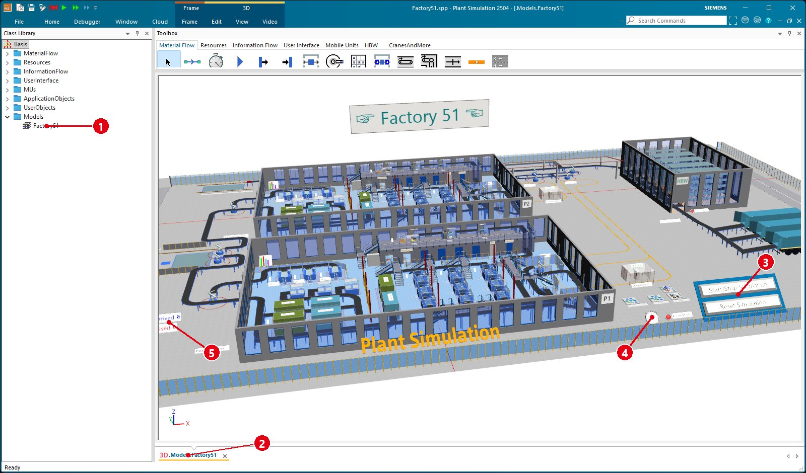
- 1Class Library → Models → Factory51 คือโมเดลที่เปิดอยู่
- 2แท็บ
3D.Models.Factory51— โมเดลเปิดในหน้าต่าง 3D ทันที - 3ปุ่มในฉาก Start/Stop Simulation และ Reset Simulation
- 4นาฬิกา EventController — ใช้ในขั้นที่ 6
- 5ตัวนับ TrucksArrived / TrucksMissed — รถบรรทุกที่เข้ามาแล้ว / ที่พลาดคิว
ขั้นที่ 2: ควบคุมมุมมอง 3D
| เมาส์ / ปุ่ม (ทดสอบบน 2504) | ผล |
|---|---|
| หมุนล้อเมาส์ | ซูมเข้า–ออก |
| คลิกขวาค้างแล้วลาก | เลื่อนฉาก (Pan) |
กดล้อเมาส์ค้างแล้วลาก หรือ Ctrl + คลิกขวาค้างแล้วลาก | หมุนฉาก |
กด V | View All — เห็นทั้งโรงงาน |
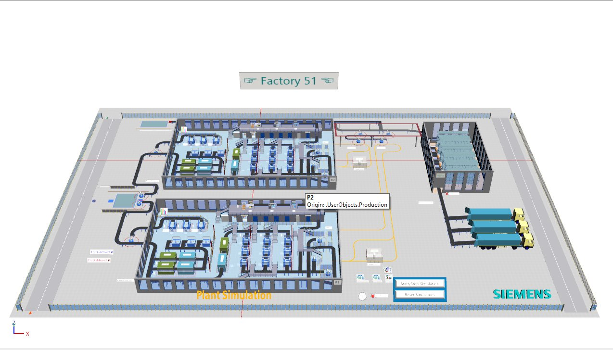
ขั้นที่ 3: เดินชม 5 โซน
ซูมและเลื่อนไปดูทีละโซนตามลำดับการไหลของของ: รับของ → ผลิต → ขนส่งภายใน → คลังอัตโนมัติ → ส่งของ (ภาพทั้งหมดถ่ายที่เวลาจำลอง 20 นาที)
3.1 รับของ (Inbound)
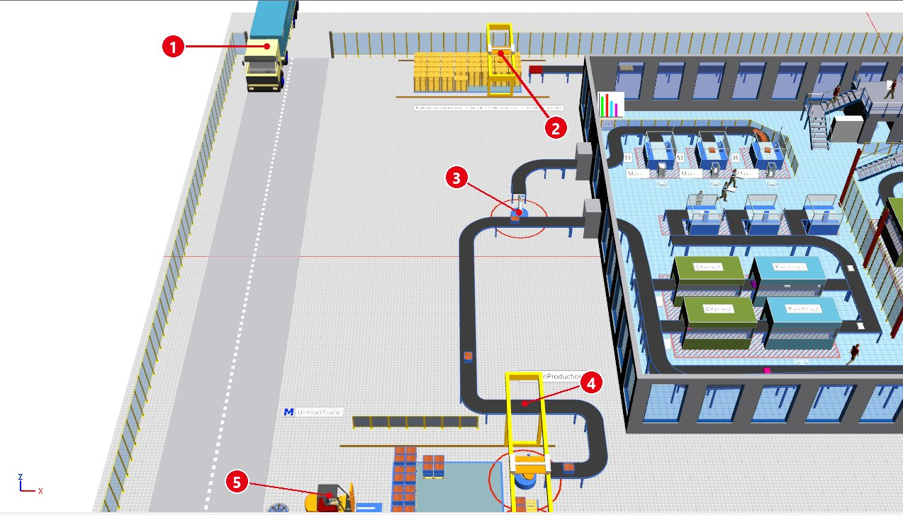
- 1รถบรรทุก วิ่งเข้าตามถนน (
SupplyRoad) — การขนส่งขาเข้า - 2เครนขนาดเล็ก (
SmallCrane) จัดการกองพาเลทเปล่า - 3สายพาน + หุ่นยนต์หยิบวาง ส่งพาเลทเข้าโรงผลิต
- 4เครนแบบพอร์ทัล (
MultiPortalCrane) เก็บพาเลทในพื้นที่จัดเก็บ (StorageArea) - 5รถยกพาเลท ขนของจากรถบรรทุกเข้าพื้นที่พัก (สร้างด้วย
AGVPoolและ MethodUnloadTruck)
3.2 ผลิต (P1 / P2)
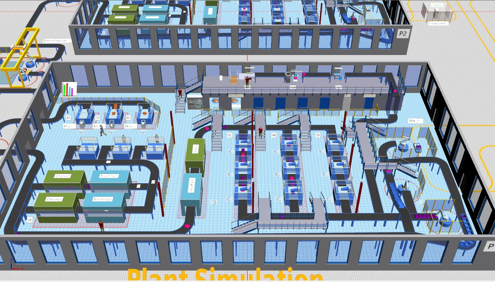
3.3 ขนส่งภายในด้วย AGV
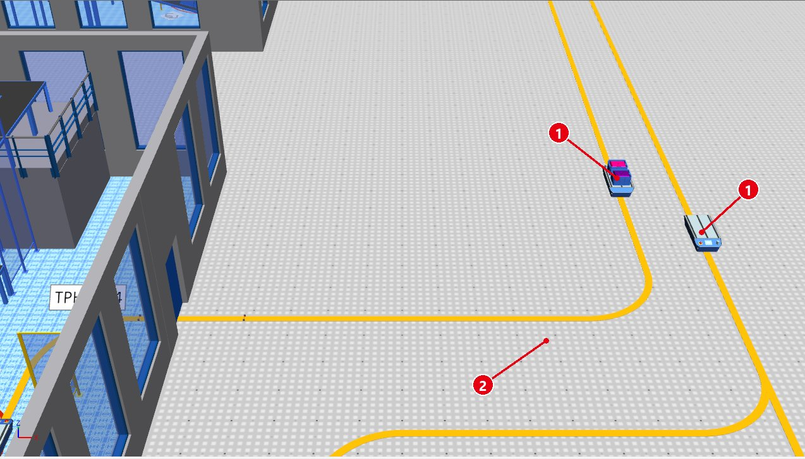
- 1AGV ขนของระหว่างโรงผลิตกับคลัง
- 2เส้นทางสีเหลือง — AGV วิ่งตามเส้นทางที่กำหนด (ตรงกับลักษณะ AGV ในบท 1.1) และมีจุดชาร์จแบตเตอรี่ระหว่างทาง
3.4 คลังอัตโนมัติ (HBW / AS/RS)
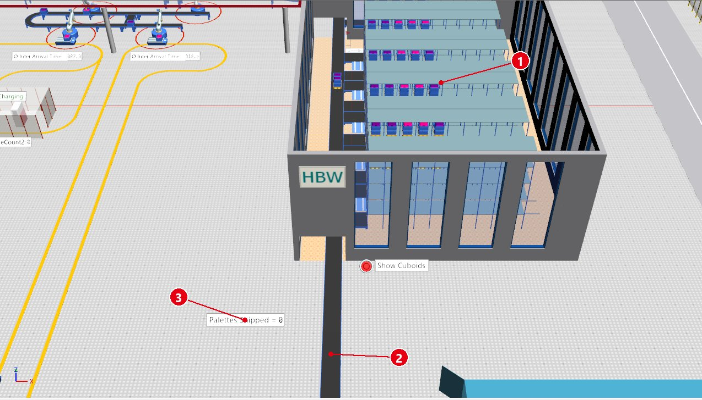
- 1ชั้นวางสูงพร้อมเครน — คลังอัตโนมัติสร้างด้วย Library HBW (ดูในขั้นที่ 4)
- 2สายพานขาออก พาพาเลทจากคลังไปท่าส่งของ
- 3ตัวนับ Palettes Shipped — จำนวนพาเลทที่ส่งออกแล้ว
3.5 ส่งของ (Outbound)
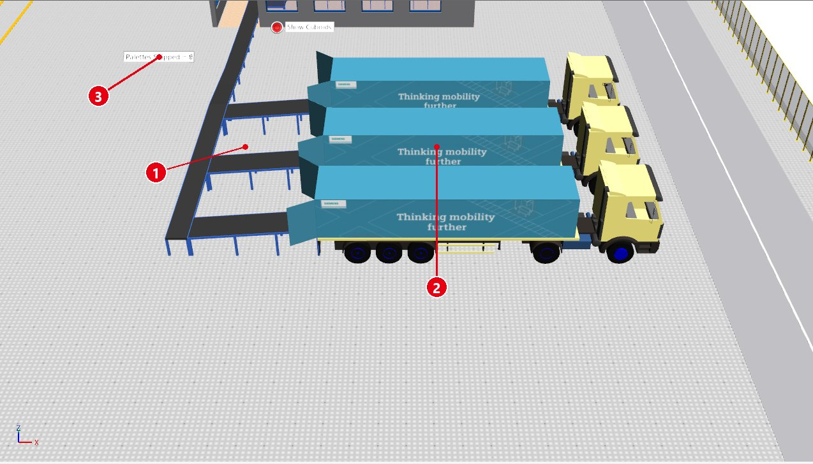
- 1สายพานแยก 3 ท่า ส่งพาเลทถึงท้ายรถ
- 2รถบรรทุกขาออก รอรับของที่ท่า — การขนส่งขาออก
- 3ตัวนับ Palettes Shipped
ขั้นที่ 4: เปิด Frame ด้านใน
อาคารบางหลังเป็น Frame ซ้อนอยู่ข้างใน (โมเดลย่อย) — เปิดดูข้างในได้
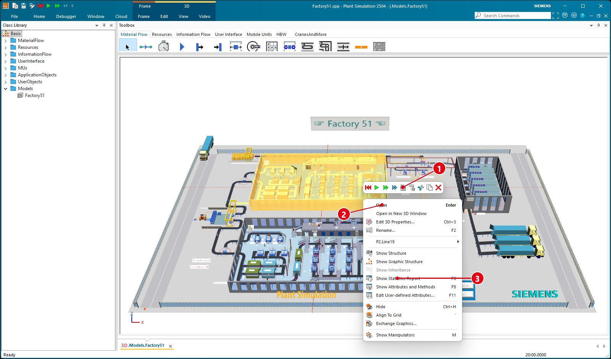
- 1คลิกขวาที่อาคาร — ด้านบนเมนูมีแถบปุ่ม Quick tools (Start / Stop / Reset ฯลฯ)
- 2Open (
Enter) — เปิด Frame ของอาคารนั้น - 3Show Statistics Report (
F6) — ดูสถิติของ Object ที่เลือก
- 1Frame ที่เปิดจะเป็นแท็บใหม่ด้านล่าง เช่น
3D.Models.Factory51.P1— คลิกแท็บ3D.Models.Factory51เพื่อกลับ - 2เปิด Frame Warehouse จะเห็นชั้นวาง (RackLane) 5 แถวของคลัง HBW
ขั้นที่ 5: อ่านข้อมูลของ WMS
คลัง HBW มี Frame WMS (Warehouse Management System) อยู่ใน Warehouse — ทำหน้าที่แบบเดียวกับ WMS จริง: รู้ว่ามีของอะไร อยู่ที่ไหน และเลือกช่องเก็บ
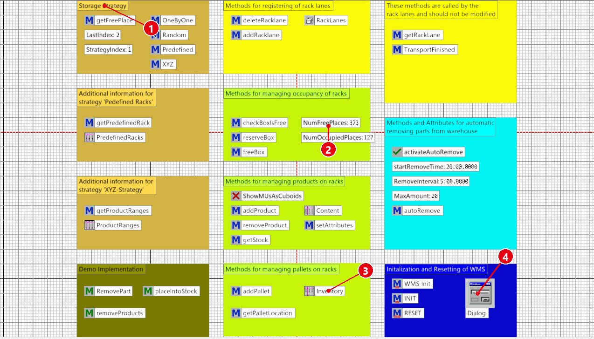
- 1Storage Strategy — วิธีเลือกช่องเก็บ: OneByOne · Random · Predefined · XYZ (โซนตามสินค้า)
- 2NumFreePlaces / NumOccupiedPlaces — ช่องว่าง / ช่องที่มีของ (ที่ 20 นาที: ว่าง 373 · มีของ 127 จาก 500 ช่อง)
- 3ตาราง Inventory — สินค้าในคลังแยกตามรหัส
- 4Dialog — หน้าต่างตั้งค่า WMS
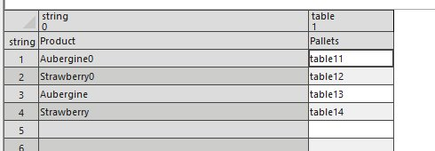
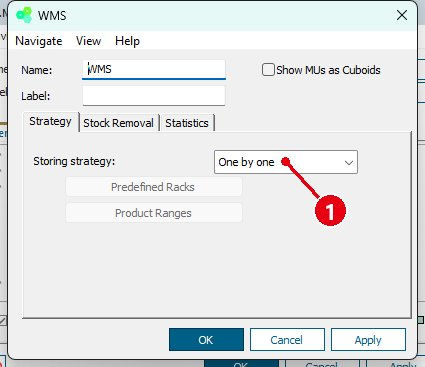
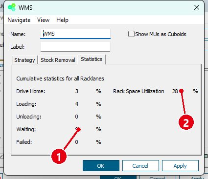
ขั้นที่ 6: รัน 1 ชั่วโมง แล้วกรอกตารางผล
- 1Time — เวลาจำลองตอนนี้
- 2Reset — เวลากลับไป 0
- 3Start — เริ่มรัน (ปุ่มถัดไปคือรันเร็วโดยไม่แสดงภาพ)
- 4แถบ Slower / Faster — ปรับความเร็วภาพเคลื่อนไหว
- 5Real-time × — เร็วกว่าเวลาจริงกี่เท่า
- 1ดับเบิลคลิกนาฬิกา EventController ในฉาก แล้วคลิก Reset
- 2แท็บ Settings ตั้งเวลาจบ (End) เป็น
1:00:00— ในไฟล์ตัวอย่างไม่ได้ตั้งเวลาจบไว้ จะรันไปเรื่อย ๆ - 3คลิก Start ดูรถ เครน และ AGV ทำงาน แล้วปรับ Faster ให้ถึง 1 ชั่วโมงเร็วขึ้น
- 4เมื่อหยุดที่ 1:00:00 อ่านค่าแล้วกรอกตาราง
| ค่าที่อ่าน | อ่านจากไหน | ผลที่วัดบน 2504 (1 ชั่วโมง) |
|---|---|---|
| รถบรรทุกเข้ามา / พลาดคิว | ตัวนับ TrucksArrived / TrucksMissed | 6 / 0 คัน |
| ช่องในคลังที่มีของ / ว่าง | WMS: NumOccupiedPlaces / NumFreePlaces | 140 / 360 ช่อง |
| สัดส่วนเวลาที่เครนรอ | WMS → Dialog → Statistics: Waiting | 91 % |
แบบฝึก: หา Beer room ใน Factory 51
ฝึกซูม เลื่อน และหมุนให้คล่อง — ในโรงผลิตมีห้องเล็ก ๆ ซ่อนอยู่ ลองหาเองก่อนแล้วค่อยดูเฉลย
ดูเฉลย
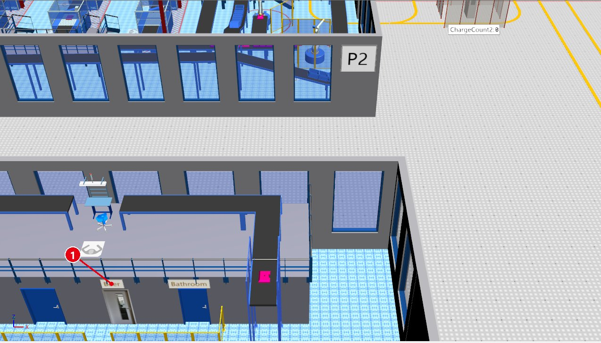